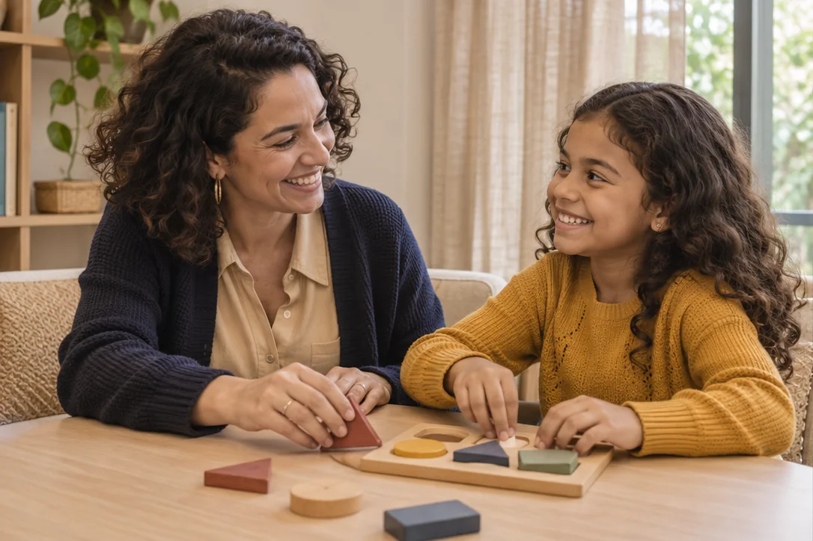

Psicopedagogia
Busca entender como cada pessoa aprende e o que pode estar dificultando seu percurso de aprendizagem.
Fale sobre esta áreaInstituto C&T Equipe multidisciplinar
Uma equipe multidisciplinar dedicada a promover o desenvolvimento, a aprendizagem e o bem-estar por meio de um atendimento especializado e humanizado.

O Instituto
Reunimos profissionais de diferentes áreas para promover o desenvolvimento, a aprendizagem e a inclusão.
Oferecemos avaliação, intervenção e acompanhamento especializado. Buscamos compreender as necessidades de cada pessoa e respeitar suas particularidades ao longo do atendimento.
Conheça nossos serviçosÁreas de atuação
Conheça as áreas que compõem nossa equipe multidisciplinar e veja como cada uma pode apoiar diferentes necessidades.
Busca entender como cada pessoa aprende e o que pode estar dificultando seu percurso de aprendizagem.
Fale sobre esta áreaTrabalha a relação entre movimento, percepção e emoções, com atenção à coordenação e à expressão corporal.
Fale sobre esta áreaOferece escuta e acompanhamento para compreender emoções, comportamentos e relações.
Fale sobre esta áreaAtua no desenvolvimento da comunicação, com atenção à fala, à linguagem e à interação no dia a dia.
Fale sobre esta áreaApoia a autonomia e a participação em atividades do cotidiano, considerando as necessidades de cada pessoa.
Fale sobre esta áreaPropõe estratégias de ensino que respeitam diferentes ritmos e modos de aprender.
Fale sobre esta áreaServiços
Atendemos pessoas e famílias e apoiamos instituições de ensino em questões de aprendizagem, desenvolvimento e inclusão.
Converse com a equipeCompreensão das necessidades e habilidades de cada pessoa.
Acompanhamento orientado pelas necessidades identificadas.
Apoio à participação e à aprendizagem no ambiente escolar.
Acompanhamento do desenvolvimento da leitura e da escrita.
Diálogo com famílias sobre desafios e estratégias no dia a dia.
Orientação especializada em aprendizagem, desenvolvimento e inclusão.
Conversas informativas com famílias, educadores e instituições.
Nossa abordagem
A equipe multidisciplinar considera a pessoa em seu contexto, incluindo as relações em casa e na escola.
Contato
Entre em contato com nossa equipe para conhecer melhor nossas especialidades e serviços.